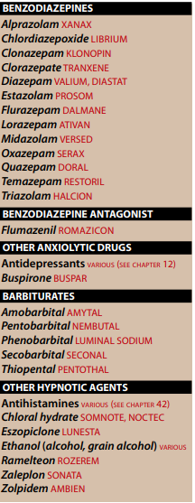
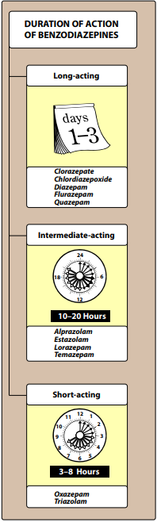

OVERVIEW
→ Anxiety is an unpleasant state of tension,apprehension or uneasiness.
- a mental distrurbances
- tachycardia
- sweating
- trembling
- palpitation
- invole sympathetic activation
- anti-anxiety drugs
- behavioral therapy
- psychotherapy
BENZODIAZEPINES
→ most widely used anxiolytic drugs.
→ prelaced barbiturates and meprobamate
A.MECHANISM OF ACTION
→ target of benzodiazepines action
- GABAa receptors
- GABA is the major inhibitory neurotransmitter in the CNS.
- α,β and γ subunit families
- result in different pharmacological effects
- modulates GABA effects by
- binding to a specific, high affinity at
- αsubunit and γ2subunit
- binding to a specific, high affinity at
- [BZ1] α1-subunit ,[BZ2] α2-subunit
→ by binding cauasing
- Chloride-channel to open
- ↑ chloride conductance
→ influx of chloride
- small hyperpolarization
- moves postsynaptic potential away
- inhibit the formation of action potential
- Reduction of anxiety:
- at low doses are anxiolytic
- by selectively enhancing GABAergic transmission have α2subunit
- or by inhibiting neuronal circuits in the limbic system of the brain.
- by selectively enhancing GABAergic transmission have α2subunit
- at low doses are anxiolytic
- at higher doses artificially produce sleep
- effects mediated by α1-GABAa-receptors
- mediated by α1-GABAa receptors
- impairs learning and form of new memories.
- several benzo's have this activity and used for epilepsy and other seizure disorders
- partially mediated by a1-GABAa-receptors
- at high doses rexal spasticity of skeleta muscle
- ↑ presynaptic inhibition in the spinal chord
Theurapeutic uses
- Anxiety disorders
- secondary to panic disorder
- GAD
- social anxiety disorder
- extreme anxiety
→ reserved for continued time because the addiction potentnial
→ Clonazepam,lorazepam,diazepam [long-acting agents]
- prolonged period of time treatment
- Alprazolam
- is effective short and long term treatment
→ Diazepam
- skeletal muscsle spams
- from degenerative disorders
- multiple sclerosis and cerebral palsy
- from degenerative disorders
→ Clonazepam
- epilepsy
- grand mal epileptic seizures
- status epilepticus
- acute treatment of alcochol withdrawal
→ not all benzo's are useful as hypnotic agents
- although all have sedative or calming effects
- ↑ nonrapid eye movement
- REM sleep and slow-wave sleep ↓
- flurazepam
- temazepam [intermediate-acting]
- triazolam [short-acting]
FLURAZEPAM
→ long acting benzo
- ↓ sleep-induction and the number of awakenings
- ↑ duration of sleep
- litlte rebound insomnia.
→ parent drug and active metabolites
- half life : 85 hours
- which may result daytime sedation and accumulation of the drug
TEMAZEPAM
→ for patients experiance frequent wakening
→ peak sedative effect 1 to 3 hours
- oral dose
- 1-2 hours before the desired bedtime
TRIAZOLAM
→ relatively short duration of action
- induce sleep in patients with insomnia
- rebound insomnia
→ to be given less than 2 to 4 weeks
PHARMACOKINETICS
1.Absorption and distribution
→ benzo's are lipophilic
→ rapidly and completely absorbed after oral admin.
→ and well distributed throughout the body
2.Duration of action
→ half lives are very important clinically
- determine therapeutic usefulness.
- short - , intermediate- , long-acting groups
- 
→ metabolized by the hepatic microsomal system to compounds that are also active
→ drug effects are terminated not only from the excrection but also from the redistribution
- excreted in urine as glucoronides or oxidezed metabolites.
Dependence
→ psychological and physical dependence can develop
- if high doses are given for prolonged period of time
- confusion,anxiety,agitation,restelness, and other
Adverse effects
1.Drowsiness and confusion
- most common
- ataxia in higher doses
- in patients with liver disease
- alcochola and CNS depressants enhance sedative-hypnotic effect
BENZODIAZEPINE ANTAGONIST
→ Flumazenil
- GABA-receptor antagonist
- which can rapidly reverse the effects of benzodiazepines
→ half life : 1hour
→ maintain reversal of a long-acting benzo
→ may percipitate withdrawal
- can cause seizure
- dizziness
- nausea
- vomiting
- agitation are the most common side effects
OTHER ANXIOLYTIC AGENTS
- ANTIDEPRESSANT
- long-term symptoms of chronic anxiety disorders
- should be consider as first-line agent
- especially in patients which are addicted to other substances
- Escitalopram
- or
- Venlafaxine
- may be used alone
- or in combo with low dose benzo for the first week of treatment
→ longer-term of combo often requried to maintain
- ongoing benifit and prevent relapse
- after 4-6 weeks benzo's doses can be tappered
b.BUSPIRONE
→ chronic treatmnet of GAD
- efficay comperable to that of benzos
→ mediated by serotonin 5-HT1 receprtors
→ in addition to benzo's
- lack anticonvulsant and muscle-relaxant activity
- cause little sedation
- hypothermia
- ↑ growth hormone and prolactine
- headaches
- dizznes
- nervousness
BARBITURATES
→ mainstay of treatment to sedate patients
- induce/maintain sleep
- induce tolerance
- drug-metabolizing enzymes
- physical dependance.
→ anesthetic conc. of penpbarbital also block high-frequency sodium channels
- ↓ neuronal activity
→ THIOPENTAL
- act within seconds
- duration of action 30 minutes
- I.V induction of anesthesia
- duration of action greater than a day
{kind=link}
{kind=link}
{kind=link}